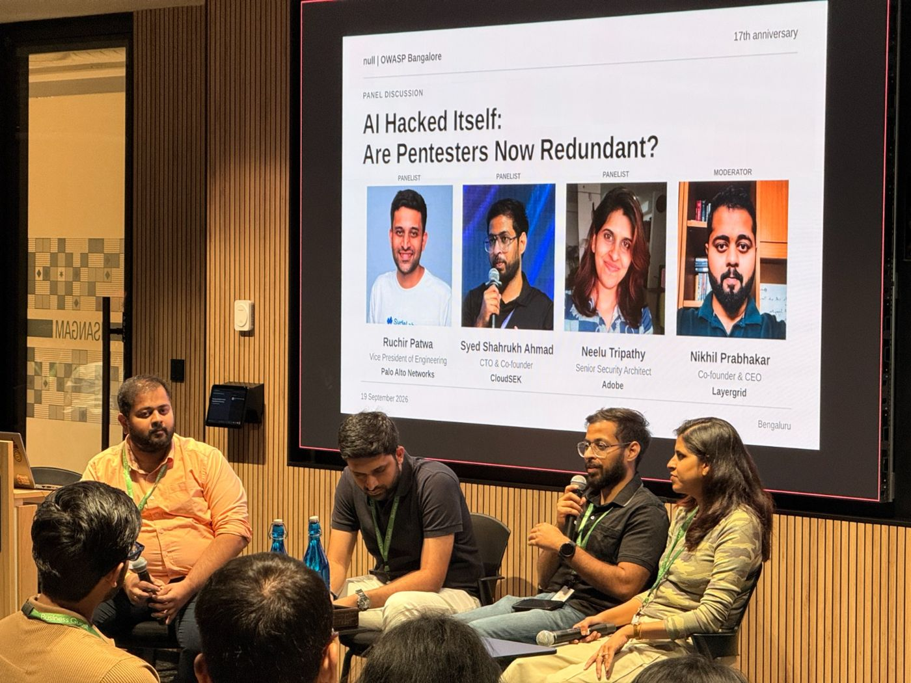
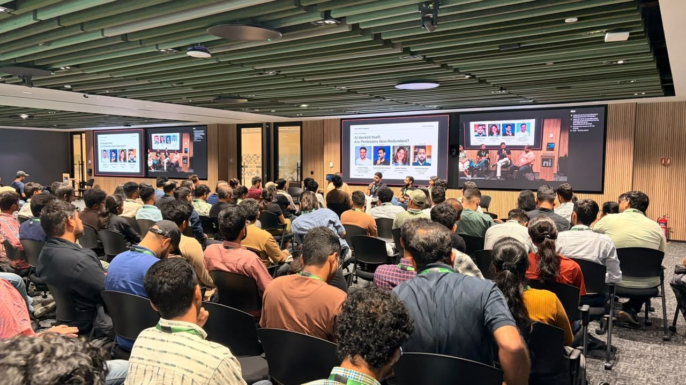

17 years of Null Bangalore — AI, pentesting and the future of offensive security


17 years of Null Bangalore, a community that has brought together hackers, researchers, defenders, and security leaders for nearly two decades. The 17th anniversary celebration was hosted at the LinkedIn office in Bangalore, in collaboration with the OWASP community. The panel featured Ruchir Patwa, Vice President of Engineering at Palo Alto Networks; Syed Shahrukh Ahmad, CTO & Co-founder of CloudSEK; and Neelu Tripathy, Senior Security Architect at Adobe, with Nikhil Prabhakar moderating the discussion.
How much of offensive security can AI automate?
The discussion started with one of the most interesting questions in cybersecurity today: how much of offensive security can actually be automated with AI? The conversation explored AI-driven penetration testing, vulnerability discovery and exploitation, followed by an interesting discussion around the specialist vs. generalist approach to building a cybersecurity career.
One of the strongest takeaways for me was seeing just how dramatically the scale of offensive security can change when AI enters the loop. The discussion around Mythos highlighted this shift — from initially giving the model broad access and observing an extremely high rate of exploit generation, going from 100–200 per day to 72,000 a day, to thinking about how such powerful capabilities could be placed in a controlled external environment and tested against targets.
When exploit development can happen at this scale and speed, what does the future of offensive security look like?
Another interesting part was the discussion around the Jev model and how newer AI systems are moving beyond simply generating responses toward more structured decision-making. This connected naturally with the broader conversation around AI in cybersecurity, particularly the difference between automating offensive workflows and automating defensive security, where context, prioritisation, investigation and human judgment become much more important.
Bug bounty in the AI era
The conversation also touched on bug bounty programs and their future in this changing landscape. With AI increasingly capable of discovering vulnerabilities, the scope of bug bounty programs could evolve significantly — not necessarily making security researchers irrelevant, but changing where human researchers add the most value. It also raises questions around how programs should handle AI-assisted research, validation, disclosure, and the increasing volume of vulnerabilities being discovered.
Careers, LinkedIn security and 17 years of null
The audience Q&A then shifted the conversation toward careers in cybersecurity. People asked practical questions about entering the industry, choosing a specialization, building the right skills, and navigating the changing security landscape. The panelists shared perspectives from their own experiences, which made this part especially valuable for anyone trying to build a career in security.
Following the panel, the LinkedIn security team gave us an insight into their security posture, the different security teams and functions within LinkedIn, and how security operates within a company at that scale. They also announced security-related job opportunities, giving the session a strong industry and career connection.
The event then took us through a recap of 17 years of Null Bangalore, showcasing photographs and moments from the community’s journey. What stood out to me was seeing how many people who are now CISOs and senior security leaders were once part of this same community. It was a great reminder of how much a strong technical community can contribute to an individual’s journey over time.
Networking
The final part was networking. We made it a point to speak with people across the cybersecurity ecosystem and introduce them to what Trench Security is building, the problems we are working on, and how we are approaching them. We had conversations with several people and got the opportunity to exchange perspectives beyond the technical discussions on stage.
My takeaway
For me, the biggest takeaway from the event was that cybersecurity is changing not just because of new tools, but because the scale, speed, and nature of security work itself are changing. And communities like Null and OWASP provide the space to have the conversations before the future becomes the present.